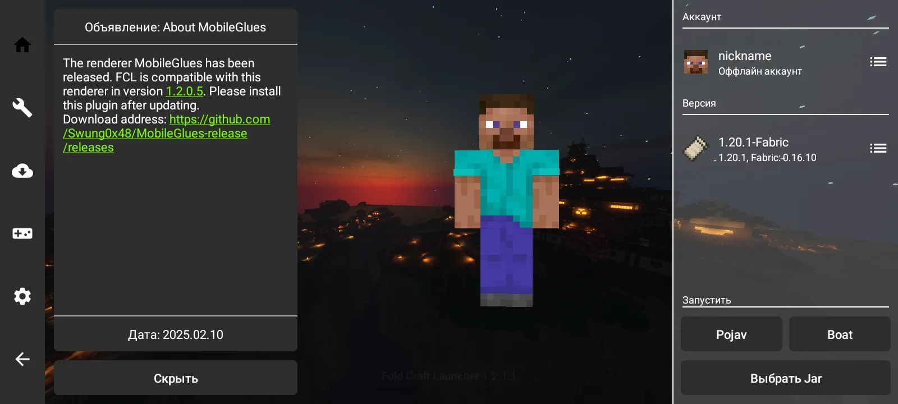
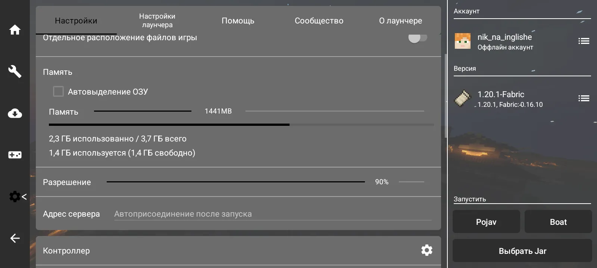
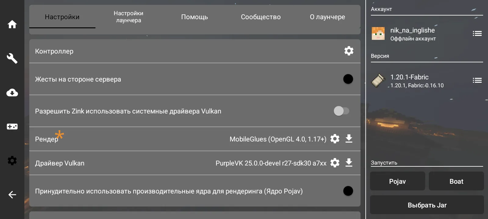

Этот "гайд" написан для тех, кто хочет поиграть в майнкрафт java edition на своем кирпиче
Для осуществления необходимо использовать специальный лаунчер, в гайде будет описано 2 таких
Примите во внимание, что для относительно комфортной игры ваше устройство должно обладать как минимум 1.5-2 ГБ свободной ОЗУ и процессором от 2.0 ГГц на ядро с нормальным графическим чипом
Дело ваших предпочтений и умений
PojavLauncher - Относительно простой - Есть необходимые настройки [ i ] Обычно рекомендуют новичкам [ i ] Использование некоторых модов (в частности оптимизирующих) невозможно ------------------------------ Скачать можно тут
Fold Craft Launcher - Чуть сложнее - Больше настроек и возможностей - Поставляется сразу со всем нужным (java разных версий и всякие библиотеки) [ i ] Есть возможность скачивать плагины рендера, например, MobileGlues для поддержки Sodium и шейдеров (будет описано позже) ------------------------------ Скачать можно тут
В общих чертах - Создать аккаунт (ник) - Немного поднастроить лаунчер - Выбрать и скачать версию майнкрафта - (Опционально) Скачать клиентские моды - Запустить игру Если вы сможете сами разобраться в лаунчере, то можете пролистать этот пункт
Fold Craft Launcher При запуске вы увидите  Для начала, создайте аккаунт Перейдите в меню скачивания, игры, выберите нужную версию и загрузчик модов Ждите до появления сообщения об успешной установке
Теперь настройка запуска игры   - Память Количество выделяемой ОЗУ. Следуйте рекомендациям в введении. Не выделяйте слишком много - Разрешение Качество картинки относительно качества экрана в процентах. Чем меньше, тем более мыльная картинка, но более высокий фпс. Рекомендую от 85% - Рендер От выбора рендера зависит то, какими средствами будет рисоваться игра на экране. Для игры без модов подойдет стандартный HolyGLES, а для игры с модами рекомендую установить MobileGlues - плагин рендера, который был упомянут ранее Остальное можно не трогать
Режим запуска Если не собираетесь использовать Sodium, то можно любой, иначе - Boat
Вот и все, можно играть
Этот пункт необходим, если вы собираетесь использовать их (в том числе и оптимизацию позднее)
В кратце, вся задача состоит в нахождении папки .minecraft/mods и переносом в нее модов Можно использовать любой файловый менеджер с возможностью просмотра скрытых папок и записью в папку Android (на андроиде конечно же)
В Fold Craft Launcher папка .minecraft находится в /sdcard/FCL, если вы разрешили лаунчеру запись в нее. Если же нет, то в /sdcard/Android/data/com.tungsten.fcl
В PojavLauncher папка .minecraft находится в /sdcard/Android/data/net.kdt.pojavlaunch.debug
[ i ] В обоих лаунчерах есть кнопка для открытия искомой папки
После того, как нашли заветную папку, остается перенести .jar файлы модов в .minecraft/mods (действительно для загрузчиков Fabric, Forge, Quilt, NeoForge)
Если игра работает недостаточно плавно, этот пункт для вас Учтите, указанные ниже моды можно использовать только на версии Fabric
Рекомендую к использованию такие моды, как: - Sodium [Modrinth] Хороший фпс и совместимость с модами [ !!! ] Необходимо использовать плагин рендера MobileGlues, что возможно только в Fold Craft Launcher или других лаунчерах, не описанных в этом гайде - Lithium [Modrinth] Поможет в одиночных мирах. Оптимизирует логику игры
то, что обычно не читает 99% детей
[ Q ] Что за MobileGlues и плагины рендера? [ A ] Плагины рендера - это по сути драйвера (или библиотеки) для вывода графики. Также, эти плагины могут работать где то лучше, где то хуже, а где то и вовсе не работать. MobileGlues относится к плагинам рендера, если по простому для пользователя, он позволяет использовать моды для оптимизации и некоторые другие, которые со встроенными в лаучеры рендерами не совместимы
[ Q ] Игра не работает, куда и как обратиться? [ A ] поплачь в подушку, может поможет При краше игры лаучер предложит скопировать или поделиться логом. Советую обращаться в комьюнити выбранного лаунчера обязательно с приложением логов, иначе, скорее всего, вас культурно пошлют по причине *я не могу вставить это тут*. Не пытайтесь обратиться к создателям модов с проблемой на телефоне, большинство авторов просто скажет вам, что "мы не поддерживаем мобильные платформы"
[ Q ] Почему имеено 2 этих лаунчера? [ A ] Pojav по простой причине, он самый известный. FoldCraft как альтернатива очень хорошо + активно развивается
[ Q ] Откуда скачивать моды? [ A ] Безопаснее всего скачивать с Modrinth и CurseForge. Прочие источники не надежны и просто перезаливают моды с других площадок и могут содержать вредоносный код (вирусы)